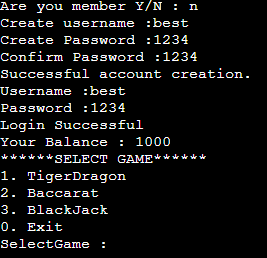

Software Testing
ตัวอย่าง Test scenario และ Code ของการ Test ภาษา Java ด้วย JUnit
ใส่ตัวอย่างหรือคำอธิบายที่เกี่ยวข้องกับการทดสอบ Java ด้วย JUnit ที่นี่
ตัวอย่าง Test scenario และ Code ของการ Test API ด้วย PostMan
{
"name": "John Doe",
"age": 30,
"city": "New York"
}

ตัวอย่าง Test scenario และ Code ของการ Test Performance ของ Website ด้วย JMeter
ใส่ตัวอย่างหรือคำอธิบายที่เกี่ยวข้องกับการทดสอบ Performance ด้วย JMeter ที่นี่